1 Ευθείες στο επίπεδο
Να ξαναδείτε τα αντίστοιχα μαθήματα Γυμνασίου
1.1 ΜΕΡΟΣ 1: ΘΕΣΕΙΣ ΕΥΘΕΙΩΝ ΣΤΟ ΕΠΙΠΕΔΟ
1.1.1 Α. Ορισμοί
Ορισμοί
Ταυτιζόμενες (ή συμπίπτουσες) ευθείες: Δύο ευθείες του ίδιου επιπέδου ονομάζονται ταυτιζόμενες όταν έχουν τουλάχιστον δύο κοινά σημεία . Στην περίπτωση αυτή, κάθε σημείο της μίας ευθείας είναι και σημείο της άλλης .
Τεμνόμενες ευθείες: Δύο ευθείες του επιπέδου ονομάζονται τεμνόμενες όταν έχουν ακριβώς ένα κοινό σημείο . Το κοινό αυτό σημείο ονομάζεται σημείο τομής τους .
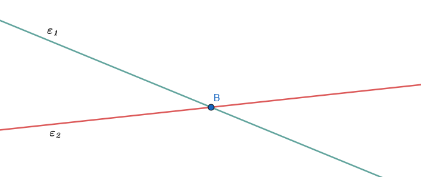
Παράλληλες ευθείες: Δύο ευθείες που βρίσκονται στο ίδιο επίπεδο και δεν έχουν κανένα κοινό σημείο, όσο και αν προεκταθούν, ονομάζονται παράλληλες ευθείες.
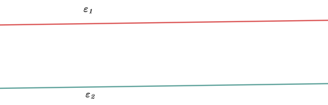
1.1.2 Β. Θεωρήματα, Προτάσεις ή Πορίσματα
Πρόταση (Θέσεις δύο ευθειών):
Δύο διαφορετικές ευθείες του ίδιου επιπέδου έχουν είτε ένα μοναδικό κοινό σημείο (τέμνουσες) είτε κανένα κοινό σημείο (παράλληλες).
Πόρισμα (Καθετότητα και Παραλληλία):
Δύο ευθείες του επιπέδου που είναι κάθετες στην ίδια ευθεία (σε διαφορετικά σημεία της) είναι παράλληλες μεταξύ τους .
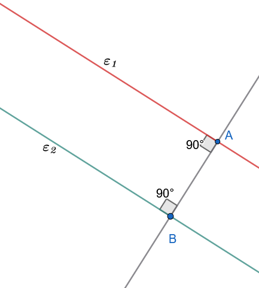
Απόδειξη
Πράγματι οι γωνίες A και B είναι ορθές, οπότε A = B. Άρα \(ε_1//ε_2\).
Πόρισμα (Ύπαρξη παράλληλης):
Από σημείο \(A\) εκτός ευθείας \(\epsilon\), υπάρχει τουλάχιστον μία ευθεία \(\epsilon'\) παράλληλη στην \(\epsilon\).
(Η ύπαρξη αποδεικνύεται κατασκευαστικά φέροντας την κάθετο \(AB \perp \epsilon\) και στη συνέχεια την κάθετη \(\epsilon' \perp AB\) στο σημείο \(A\) ).
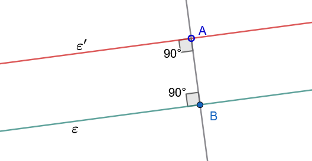
1.1.3 Γ. Εφαρμογές (Λυμένα Παραδείγματα)
Εφαρμογή 1 (Το αντίστοιχο πόρισμα με απαγωγή σε άτοπο)
Αν δύο ευθείες \(ε, ε'\) είναι κάθετες στην ίδια ευθεία \(\zeta\) σε διαφορετικά σημεία της \(A, B\), να αποδειχθεί ότι δεν έχουν κανένα κοινό σημείο (δηλαδή είναι παράλληλες).
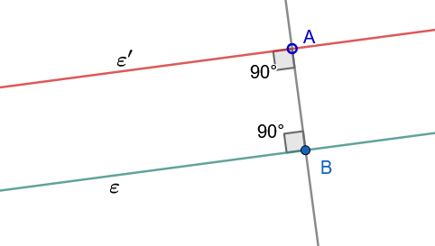
Λύση:
Έστω ότι οι ευθείες \(ε, ε'\) τέμνονται σε ένα σημείο \(M\).
Τότε, από το σημείο \(M\) (το οποίο βρίσκεται εκτός της ευθείας \(\zeta\)) θα έχουμε φέρει δύο διαφορετικές κάθετες ευθείες στην ίδια ευθεία \(\zeta\): τις \(MA\) και \(MB\) .
Αυτό όμως είναι άτοπο, καθώς από σημείο εκτός ευθείας άγεται μοναδική κάθετος προς αυτήν. Συνεπώς, η υπόθεσή μας είναι εσφαλμένη, πράγμα που σημαίνει ότι οι ευθείες \(\epsilon_1, \epsilon_2\) δεν έχουν κοινό σημείο, άρα είναι παράλληλες (\(ε \parallel ε'\)) .
Εφαρμογή 2
Αν τρεις ευθείες \(\epsilon_1, \epsilon_2, \epsilon_3\) τέμνονται ανά δύο στο επίπεδο και δεν διέρχονται όλες από το ίδιο σημείο, να βρεθεί το πλήθος των σημείων τομής τους και των ευθυγράμμων τμημάτων που ορίζονται πάνω σε αυτές.
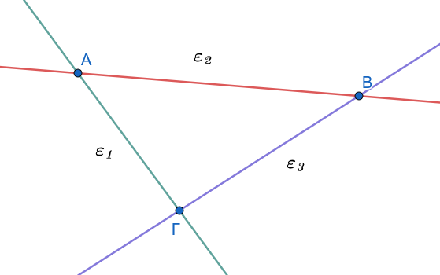
Λύση:
Οι ευθείες τέμνονται ανά δύο, άρα η \(\epsilon_1\) τέμνει την \(\epsilon_2\) στο σημείο \(A\), η \(\epsilon_2\) την \(\epsilon_3\) στο σημείο \(B\) και η \(\epsilon_3\) την \(\epsilon_1\) στο σημείο \(\Gamma\).
Επειδή δεν διέρχονται όλες από το ίδιο σημείο,τα σημεία \(A, B, \Gamma\) είναι διακριτά, άρα έχουμε ακριβώς \(3\) σημεία τομής.
Τα ευθύγραμμα τμήματα που ορίζονται πάνω στις ευθείες αυτές είναι εκείνα που έχουν ως άκρα τα σημεία τομής, δηλαδή τα τμήματα \(AB\), \(B\Gamma\) και \(\Gamma A\) (συνολικά \(3\) ευθύγραμμα τμήματα).
1.1.4 Δ. Ασκήσεις προς Επίλυση
Άσκηση 1
Εκφώνηση: Σχεδιάστε τρεις ευθείες στο επίπεδο έτσι ώστε να μην έχουν κανένα κοινό σημείο. Ποια είναι η σχετική τους θέση;
Λύση:
Για να μην έχουν κανένα κοινό σημείο ανά δύο, οι τρεις ευθείες πρέπει να είναι παράλληλες μεταξύ τους: \[\epsilon_1 \parallel \epsilon_2 \quad \text{και} \quad \epsilon_2 \parallel \epsilon_3 \implies \epsilon_1 \parallel \epsilon_3 \quad\]
Σε αυτή την περίπτωση, η απόσταση μεταξύ τους παραμένει σταθερή και το σύνολο των σημείων τομής τους είναι κενό.
Άσκηση 2
Εκφώνηση: Αν τέσσερις ευθείες διέρχονται από μια περιοχή έτσι ώστε ανά δύο να διασταυρώνονται (τέμνονται) και ανά τρεις να μη διέρχονται από το ίδιο σημείο, πόσες διασταυρώσεις (σημεία τομής) σχηματίζονται; Γενικεύστε για \(\nu\) ευθείες (\(\nu \ge 2\)).
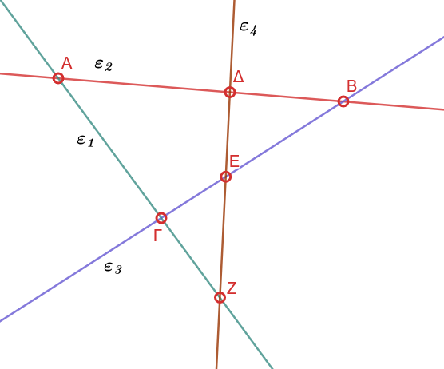
Λύση:
Για \(4\) ευθείες, κάθε μία τέμνει τις υπόλοιπες \(3\) σε διακριτά σημεία. Το συνολικό πλήθος των σημείων τομής είναι: \[S = \frac{4 \cdot (4-1)}{2} = \frac{12}{2} = 6 \text{ σημεία} \quad\]
Γενικά, για \(\nu\) ευθείες που τέμνονται ανά δύο χωρίς ανά τρεις να συντρέχουν, σχηματίζονται: \[S = \frac{\nu(\nu-1)}{2} \text{ σημεία τομής} \quad\]
Άσκηση 3
Εκφώνηση: Δίνονται δύο παράλληλες ευθείες \(\epsilon_1 \parallel \epsilon_2\) και μια ευθεία \(\zeta\) κάθετη στην \(\epsilon_1\). Αποδείξτε ότι η \(\zeta\) τέμνει και την \(\epsilon_2\).
Λύση:
Έστω ότι η \(\zeta\) τέμνει την \(\epsilon_1\) στο σημείο \(A\). Αν υποθέσουμε ότι η \(\zeta\) δεν τέμνει την \(\epsilon_2\), τότε θα πρέπει να είναι παράλληλη προς αυτήν (\(\zeta \parallel \epsilon_2\)).
Τότε όμως, από το σημείο \(A\) (το οποίο βρίσκεται εκτός της ευθείας \(\epsilon_2\)) θα διέρχονται δύο διαφορετικές παράλληλες ευθείες προς την \(\epsilon_2\) (η \(\epsilon_1\) και η \(\zeta\)), πράγμα που αντιβαίνει στο αξίωμα παραλληλίας.
Άρα, η υπόθεσή μας είναι άτοπη, οπότε η \(\zeta\) τέμνει υποχρεωτικά την \(\epsilon_2\).
Άσκηση 4
Εκφώνηση: Δύο ευθείες \(\epsilon_1\) και \(\epsilon_2\) τέμνονται στο σημείο \(O\). Αν θεωρήσουμε σημείο \(P\) εκτός των ευθειών αυτών, αποδείξτε ότι δεν μπορεί να υπάρξει ευθεία που να διέρχεται από το \(P\) και να είναι παράλληλη και στις δύο ευθείες \(\epsilon_1, \epsilon_2\).
Λύση:
Ας υποθέσουμε ότι υπάρχει ευθεία \(\zeta\) διερχόμενη από το \(P\) τέτοια ώστε \(\zeta \parallel \epsilon_1\) και \(\zeta \parallel \epsilon_2\).
Λόγω της μεταβατικής ιδιότητας της παραλληλίας, εφόσον δύο διαφορετικές ευθείες είναι παράλληλες προς μία τρίτη, είναι και μεταξύ τους παράλληλες: \[\zeta \parallel \epsilon_1 \quad \text{και} \quad \zeta \parallel \epsilon_2 \implies \epsilon_1 \parallel \epsilon_2 \quad\]
Αυτό όμως είναι άτοπο, καθώς οι ευθείες \(\epsilon_1, \epsilon_2\) δίνονται ως τεμνόμενες στο σημείο \(O\). Συνεπώς, δεν μπορεί να υπάρξει τέτοια ευθεία.
Άσκηση 5
Εκφώνηση: Αν δύο διαφορετικές ευθείες \(\epsilon_1\) και \(\epsilon_2\) είναι παράλληλες προς μια τρίτη ευθεία \(\epsilon_3\), αποδείξτε ότι είναι και μεταξύ τους παράλληλες (\(\epsilon_1 \parallel \epsilon_2\)).
Λύση:
Έστω ότι οι \(\epsilon_1\) και \(\epsilon_2\) δεν είναι παράλληλες, πράγμα που σημαίνει ότι τέμνονται σε κάποιο σημείο \(A\).
Από το σημείο \(A\) όμως, το οποίο βρίσκεται εκτός της ευθείας \(\epsilon_3\), θα διέρχονται δύο διαφορετικές ευθείες (οι \(\epsilon_1, \epsilon_2\)) παράλληλες προς την \(\epsilon_3\) .
Αυτό αντιβαίνει άμεσα στο Ευκλείδειο αίτημα της μοναδικότητας της παράλληλης ευθείας. Συνεπώς, οι \(\epsilon_1\) και \(\epsilon_2\) είναι παράλληλες.
1.2 ΜΕΡΟΣ 2: ΤΕΜΝΟΥΣΑ ΔΥΟ ΕΥΘΕΙΩΝ - ΕΥΚΛΕΙΔΕΙΟ ΑΙΤΗΜΑ
1.2.1 Α. Ορισμοί
Τέμνουσα (ή διατέμνουσα) δύο ευθειών: Κάθε ευθεία που τέμνει δύο άλλες ευθείες του επιπέδου σε δύο διαφορετικά σημεία ονομάζεται τέμνουσα των ευθειών αυτών.
Ονομασία γωνιών τέμνουσας: Όταν δύο ευθείες \(\epsilon_1, \epsilon_2\) τέμνονται από μία τρίτη \(\epsilon_3\), σχηματίζονται οκτώ γωνίες:
- Εντός: Οι τέσσερις γωνίες που βρίσκονται στη ζώνη μεταξύ των ευθειών \(\epsilon_1\) και \(\epsilon_2\).
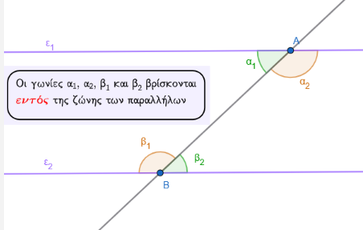
- Εκτός: Οι τέσσερις γωνίες που βρίσκονται εκτός της ζώνης των \(\epsilon_1\) και \(\epsilon_2\) .
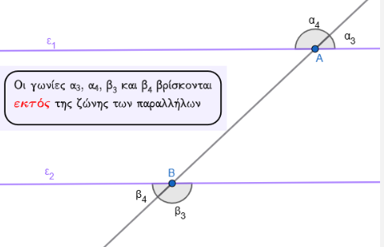
- Επί τα αυτά μέρη: Δύο γωνίες που βρίσκονται προς το ίδιο μέρος (ημιεπίπεδο) της τέμνουσας \(\epsilon_3\).
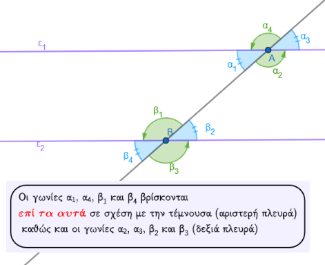
- Εναλλάξ: Δύο γωνίες που βρίσκονται εκατέρωθεν της τέμνουσας \(\epsilon_3\).
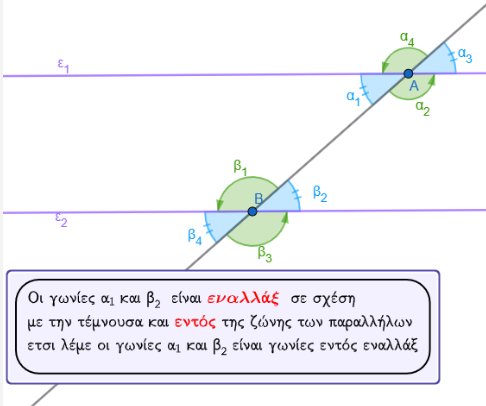
- Συνδυαστικά, οι γωνίες ονομάζονται: εντός εναλλάξ, εντός εκτός και επί τα αυτά μέρη (ή αντίστοιχες), και εντός και επί τα αυτά μέρη.
Δείτε το μάθημα 19 Γεωμετρία Α Τάξης Γυμνασίου.
Ευκλείδειο Αίτημα (Αίτημα V):
Από σημείο \(A\) εκτός ευθείας \(\epsilon\), υπάρχει μία μόνο ευθεία \(\epsilon'\) παράλληλη προς την \(\epsilon\) .
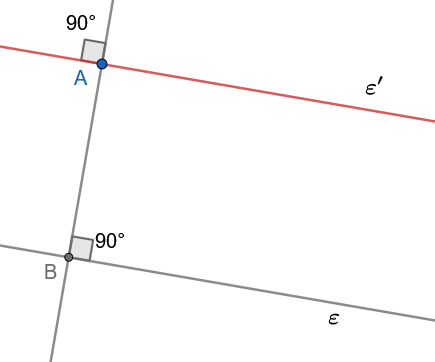
Έστω λοιπόν, ευθεία ε και σημείο Α εκτός αυτής. Φέρουμε την ΑΒ ⊥ ε και ονομάζουμε ε’ την ευθεία που είναι κάθετη στην ΑΒ στο σημείο Α. Τότε ε’//ε (αφού και οι δύο είναι κάθετες στην ΑΒ).
Έτσι λοιπόν υπάρχει ευθεία ε’ που διέρχεται από ένα σημείο Α που δεν ανήκει στην ε και είναι παράλληλη προς την ευθεία ε.
Δεχόμαστε ως αξίωμα ότι η ευθεία αυτή είναι μοναδική.
1.2.2 Β. Θεωρήματα, Προτάσεις ή Πορίσματα
Θεώρημα (Κριτήριο Παραλληλίας):
Αν δύο ευθείες τεμνόμενες από τρίτη σχηματίζουν δύο εντός εναλλάξ γωνίες ίσες, τότε είναι παράλληλες .
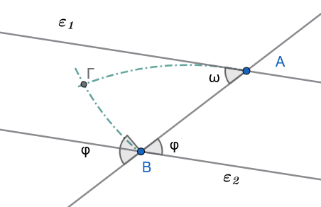
Απόδειξη
Έστω ότι \(ω = φ\). Αν οι ευθείες \(ε_1, ε_2\) τέμνονται σε σημείο Γ, η εξωτερική γωνία φ του τριγώνου ΑΒΓ θα είναι ίση με την απέναντι εσωτερική γωνία ω, που είναι άτοπο. Άρα \(ε_1//ε_2\).
Πόρισμα 1
Αν δύο ευθείες τεμνόμενες από τρίτη σχηματίζουν δύο εντός, εκτός και επί τα αυτά μέρη γωνίες ίσες ή δύο εντός και επί τα αυτά μέρη παραπληρωματικές, τότε είναι παράλληλες.
1.2.3 Εφαρμογές (Λυμένα Παραδείγματα)
Εφαρμογή 1
Δίνεται ισοσκελές τρίγωνο \(AB\Gamma\) (\(AB = A\Gamma\)) και ευθεία \(\epsilon\) παράλληλη προς τη βάση \(B\Gamma\), η οποία τέμνει τις πλευρές \(AB\) και \(A\Gamma\) στα σημεία \(\Delta\) και \(E\) αντίστοιχα. Να αποδειχθεί ότι το τρίγωνο \(A\Delta E\) είναι ισοσκελές.
Λύση:
Εφόσον το τρίγωνο \(AB\Gamma\) είναι ισοσκελές με \(AB = A\Gamma\), οι προσκείμενες στη βάση γωνίες του είναι ίσες: \[\widehat{B} = \widehat{\Gamma} \quad\]
Η ευθεία \(\Delta E\) είναι παράλληλη προς τη βάση \(B\Gamma\), οπότε τέμνεται από τις πλευρές \(AB\) και \(A\Gamma\). Οι εντός εκτός και επί τα αυτά μέρη γωνίες είναι ίσες λόγω της παραλληλίας: \[\widehat{A\Delta E} = \widehat{B} \quad \text{και} \quad \widehat{AE\Delta} = \widehat{\Gamma} \quad\]
Επειδή \(\widehat{B} = \widehat{\Gamma}\), προκύπτει άμεσα ότι: \[\widehat{A\Delta E} = \widehat{AE\Delta}\]
Το τρίγωνο \(A\Delta E\) έχει δύο γωνίες του ίσες, άρα είναι ισοσκελές με \(A\Delta = AE\).
Εφαρμογή 2
Από το έγκεντρο \(I\) (σημείο τομής των διχοτόμων) ενός τριγώνου \(AB\Gamma\), φέρουμε ευθεία παράλληλη προς την πλευρά \(B\Gamma\), η οποία τέμνει τις πλευρές \(AB\) και \(A\Gamma\) στα σημεία \(\Delta\) και \(E\) αντίστοιχα. Να αποδειχθεί ότι \(\Delta E = B\Delta + \Gamma E\).
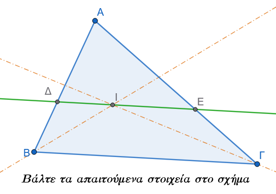
Λύση:
Η ημιευθεία \(BI\) είναι η διχοτόμος της γωνίας \(\widehat{B}\), άρα \(\widehat{I B\Delta} = \widehat{I B\Gamma}\).
Επειδή η ευθεία \(\Delta E\) είναι παράλληλη προς την \(B\Gamma\), η \(BI\) τέμνει τις δύο παράλληλες.
Οι εντός εναλλάξ γωνίες \(\widehat{B I\Delta}\) και \(\widehat{I B\Gamma}\) είναι ίσες λόγω της παραλληλίας: \[\widehat{B I\Delta} = \widehat{I B\Gamma} \quad\]
Συνεπώς, στο τρίγωνο \(\Delta B I\) ισχύει \(\widehat{I B\Delta} = \widehat{B I\Delta}\), οπότε το τρίγωνο είναι ισοσκελές με \(\Delta I = B\Delta\).
Με τον ίδιο ακριβώς τρόπο, η ημιευθεία \(\Gamma I\) είναι η διχοτόμος της γωνίας \(\widehat{\Gamma}\), άρα \(\widehat{I\Gamma E} = \widehat{I\Gamma B}\).
Λόγω της παραλληλίας, οι εντός εναλλάξ γωνίες \(\widehat{\Gamma I E}\) και \(\widehat{I\Gamma B}\) είναι ίσες:\[\widehat{\Gamma I E} = \widehat{I\Gamma B} \quad\]
Συνεπώς, στο τρίγωνο \(E\Gamma I\) ισχύει \(\widehat{I\Gamma E} = \widehat{\Gamma I E}\), οπότε το τρίγωνο είναι ισοσκελές με \(EI = \Gamma E\) .
Υπολογίζουμε το συνολικό τμήμα \(\Delta E\): \[\Delta E = \Delta I + IE = B\Delta + \Gamma E \quad\]
1.2.4 Δ. Ασκήσεις προς Επίλυση
Άσκηση 6
Εκφώνηση: Δύο παράλληλες ευθείες \(\epsilon_1 \parallel \epsilon_2\) τέμνονται από τρίτη ευθεία \(\epsilon_3\). Αν μία από τις γωνίες που σχηματίζονται είναι ίση με \(65^\circ\), να υπολογίσετε το μέτρο και των υπόλοιπων επτά γωνιών.
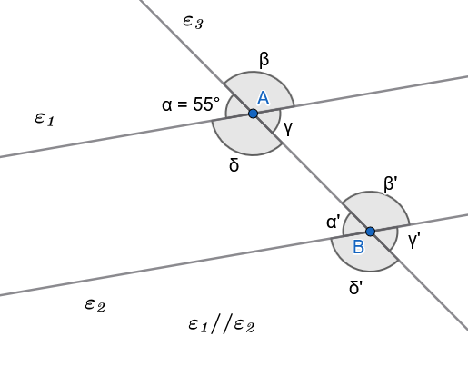
Λύση:
Έστω \(\alpha = 65^\circ\).
Η κατακορυφήν της γωνία είναι \(\gamma = \alpha = 55^\circ\).
Η παραπληρωματική της είναι \(\beta = 180^\circ - 55^\circ = 125^\circ\), και η κατακορυφήν αυτής είναι \(\delta = 125^\circ\).
Σύμφωνα με τις ιδιότητες των παραλλήλων ευθειών, οι αντίστοιχες γωνίες στην άλλη κορυφή είναι ίσες:
- \(\alpha' = \alpha = 55^\circ\) (εντός εκτός και επί τα αυτά).
- \(\gamma' = \gamma = 55^\circ\).
- \(\beta' = \beta = 125^\circ\).
- \(\delta' = \delta = 125^\circ\).
Άσκηση 7
Εκφώνηση: Δίνεται γωνία \(\widehat{xOy}\) και σημείο \(A\) της διχοτόμου της. Αν η παράλληλη ευθεία από το \(A\) προς την πλευρά \(Ox\) τέμνει την πλευρά \(Oy\) στο σημείο \(B\), να αποδείξετε ότι το τρίγωνο \(OAB\) είναι ισοσκελές.
Λύση:
Έστω \(Oz\) η διχοτόμος της γωνίας \(\widehat{xOy}\), οπότε \(\widehat{xOA} = \widehat{AOB} = \omega\).
Η ευθεία \(AB\) είναι παράλληλη προς την \(Ox\) (\(AB \parallel Ox\)) και τέμνεται από τη διχοτόμο \(Oz\) (δηλαδή την ευθεία \(OA\)) .
Οι εντός εναλλάξ γωνίες \(\widehat{xOA}\) και \(\widehat{OAB}\) είναι ίσες λόγω παραλληλίας: \[\widehat{OAB} = \widehat{xOA} = \omega \quad\]
Εφόσον στο τρίγωνο \(OAB\) ισχύει \(\widehat{OAB} = \widehat{AOB} = \omega\), το τρίγωνο έχει δύο γωνίες ίσες, άρα είναι ισοσκελές με \(OB = AB\).
Άσκηση 8
Εκφώνηση: Αν οι διχοτόμοι των γωνιών \(\widehat{A}\) και \(\widehat{B}\) κυρτού τετραπλεύρου \(AB\Gamma\Delta\) τέμνονται στο σημείο \(E\), να αποδείξετε ότι η γωνία \(\widehat{AEB}\) ισούται με το ημιάθροισμα των άλλων δύο γωνιών του τετραπλεύρου: \[\widehat{AEB} = \frac{\widehat{\Gamma} + \widehat{\Delta}}{2} \quad\]
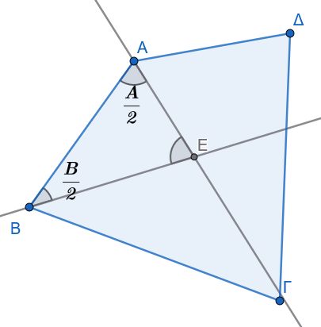
Λύση:
Στο τρίγωνο \(AEB\), το άθροισμα των εσωτερικών γωνιών είναι \(180^\circ\): \[\widehat{AEB} + \frac{\widehat{A}}{2} + \frac{\widehat{B}}{2} = 180^\circ \implies \widehat{AEB} = 180^\circ - \frac{\widehat{A} + \widehat{B}}{2} \quad\]
Στο κυρτό τετράπλευρο \(AB\Gamma\Delta\), το άθροισμα των εσωτερικών γωνιών είναι \(360^\circ\): \[\widehat{A} + \widehat{B} + \widehat{\Gamma} + \widehat{\Delta} = 360^\circ \implies \widehat{A} + \widehat{B} = 360^\circ - (\widehat{\Gamma} + \widehat{\Delta})\]
Αντικαθιστούμε στην πρώτη σχέση: \[\widehat{AEB} = 180^\circ - \frac{360^\circ - (\widehat{\Gamma} + \widehat{\Delta})}{2} = \frac{\widehat{\Gamma} + \widehat{\Delta}}{2} \quad\]
Άσκηση 9
Εκφώνηση: Από τα άκρα ευθυγράμμου τμήματος \(AB\) φέρουμε προς το ίδιο ημιεπίπεδο δύο παράλληλες ημιευθείες \(Ax\) και \(By\). Παίρνουμε τυχαίο σημείο \(\Gamma\) πάνω στο τμήμα \(AB\), και πάνω στις \(Ax, By\) λαμβάνουμε τα σημεία \(\Delta\) και \(E\) αντίστοιχα, έτσι ώστε \(A\Delta = A\Gamma\) και \(BE = B\Gamma\). Να αποδείξετε ότι η γωνία \(\widehat{\Delta\Gamma E}\) είναι ορθή (\(90^\circ\)).
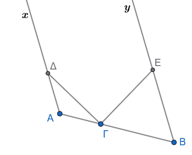
Βάλτε τα απαραίτητα στοιχεία στο σχήμα
Λύση:
Το τρίγωνο \(A\Gamma\Delta\) είναι ισοσκελές (\(A\Delta = A\Gamma\)), άρα \(\widehat{A\Gamma\Delta} = \widehat{A\Delta\Gamma} = \omega\).
Το άθροισμα των γωνιών του είναι: \[\widehat{A} + 2\omega = 180^\circ \implies \omega = 90^\circ - \frac{\widehat{A}}{2} \quad\]
Το τρίγωνο \(B\Gamma E\) είναι ισοσκελές (\(BE = B\Gamma\)), άρα \(\widehat{B\Gamma E} = \widehat{BE\Gamma} = \phi\).
Το άθροισμα των γωνιών του είναι: \[\widehat{B} + 2\phi = 180^\circ \implies \phi = 90^\circ - \frac{\widehat{B}}{2} \quad\]
Επειδή \(Ax \parallel By\), οι εντός και επί τα αυτά μέρη γωνίες είναι παραπληρωματικές: \(\widehat{A} + \widehat{B} = 180^\circ\).
Αθροίζουμε τις γωνίες \(\omega\) και \(\phi\): \[\omega + \phi = 180^\circ - \frac{\widehat{A} + \widehat{B}}{2} = 180^\circ - 90^\circ = 90^\circ \quad\]
Επειδή η γωνία \(\widehat{A\Gamma B}\) είναι ευθεία (\(180^\circ\)): \[\widehat{\Delta\Gamma E} = 180^\circ - (\omega + \phi) = 180^\circ - 90^\circ = 90^\circ \quad\]
Άσκηση 10
Εκφώνηση: Αν μία ευθεία \(\epsilon\) τέμνει τη μία από δύο παράλληλες ευθείες \(\epsilon_1 \parallel \epsilon_2\), αποδείξτε ότι η \(\epsilon\) τέμνει υποχρεωτικά και την άλλη ευθεία \(\epsilon_2\).
Λύση:
Έστω ότι η ευθεία \(\epsilon\) τέμνει την \(\epsilon_1\) στο σημείο \(A\). Αν υποθέσουμε ότι η \(\epsilon\) δεν τέμνει την \(\epsilon_2\), τότε η \(\epsilon\) θα είναι παράλληλη προς την \(\epsilon_2\) (\(\epsilon \parallel \epsilon_2\)).
Τότε όμως, από το σημείο \(A\) θα διέρχονται δύο διαφορετικές ευθείες, η \(\epsilon_1\) και η \(\epsilon\), οι οποίες είναι και οι δύο παράλληλες προς την ευθεία \(\epsilon_2\).
Αυτό έρχεται σε άμεση αντίθεση με το Ευκλείδειο Αίτημα, σύμφωνα με το οποίο από σημείο εκτός ευθείας άγεται μία μόνο παράλληλος προς αυτήν. Συνεπώς, η υπόθεσή μας είναι άτοπη, οπότε η ευθεία \(\epsilon\) τέμνει υποχρεωτικά την \(\epsilon_2\) .
ΚΑΛΗ ΜΕΛΕΤΗ !!!